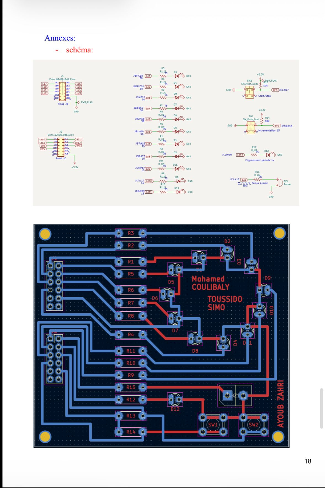
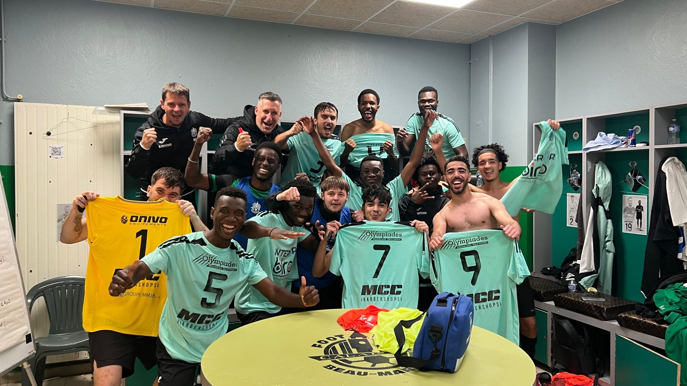

BUT 1Savoir-faire · Schéma électrique
Schéma électrique & Routage PCB
Réalisation du schéma électrique complet et du routage du circuit imprimé (PCB) sous KiCad en vue de la fabrication de la carte.
Étudiant en deuxième année de BUT GEII à l'IUT du Littoral Côte d'Opale, parcours Automatisme et Informatique Industrielle. Je m'intéresse à l'automatisme, à l'électricité industrielle, à l'électronique et aux systèmes embarqués.
Un parcours orienté vers les systèmes électriques et automatisés.
Au cours de ma formation en BUT GEII, j'ai développé des compétences en programmation d'automates, en conception électronique, en câblage et en programmation de microcontrôleurs. J'aime comprendre le fonctionnement des systèmes, réaliser des essais et rechercher des solutions aux problèmes techniques.
Formation : BUT GEII · IUT du Littoral Côte d'Opale · Calais
Logiciels et technologies utilisés pendant mes projets et travaux pratiques.
Programmation embarquée
Scripts et bases de programmation
Automate Siemens S7-1200, GRAFCET
Microcontrôleur PIC24
Schéma électronique et routage PCB
Logique numérique et FPGA Basys 3
Schémas électriques
Câblage et lecture de schémas
Analyse et programmation de systèmes
Quelques réalisations effectuées pendant ma formation en BUT 1 et BUT 2.

Réalisation du schéma électrique complet et du routage du circuit imprimé (PCB) sous KiCad en vue de la fabrication de la carte.
Préparation de la fabrication en laboratoire, usinage/perçage de précision du circuit imprimé, assemblage et tests du minuteur.

Étude et réalisation d'un système de commande de volet roulant avec automate Siemens S7-1200, modes de fonctionnement et sécurités.
Les documents sont classés par année de BUT.
Projets, dossiers techniques et comptes rendus.
Dossier de fabrication – MinuteurPDF · dossier technique↗ Schéma électrique & PCB (KiCad)Image · Annexe technique↗Automatisme, maintenance et projets industriels.
Projet volet roulantPDF · à ajouter dans le dépôt↗ Autres documents BUT 2Ajouter ici tes autres PDF↗Le sport collectif comme moteur de cohésion, de rigueur et de dépassement de soi.

En parallèle de mes études en BUT GEII, je pratique le football en club. Le sport collectif m'apporte l'esprit d'équipe, la communication sous pression et la persévérance — des qualités que j'applique au quotidien dans mes projets techniques et en milieu industriel.
Disponible pour échanger sur une alternance ou un projet technique.
ayoubzahri001@gmail.com